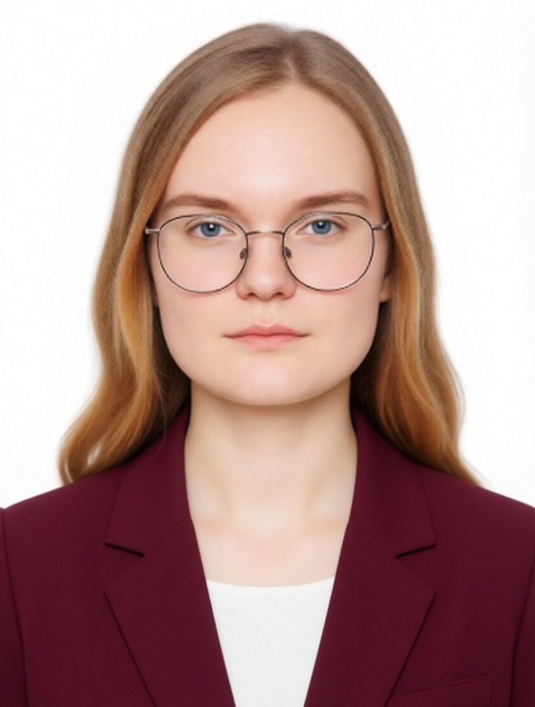
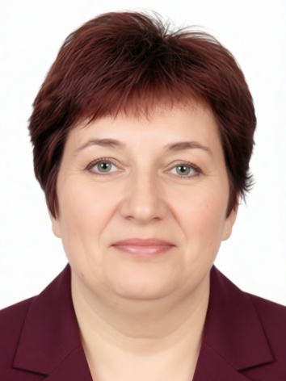
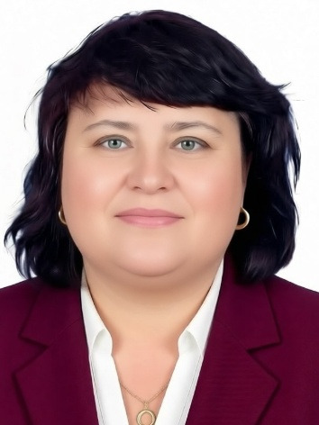

Выдающиеся люди СФСРЮ
Галерея выдающихся граждан Советской Федеративной Социалистической Республики Юльсанна. Здесь представлены политические деятели, герои труда, учёные и государственные служащие, чей вклад в развитие страны отмечен народным признанием.
← Вернуться к категориям Википедии
Гордеихин Дмитрий Алексеевич
Президент СФСРЮ
Высшее должностное лицо государства, гарант Конституции СФСРЮ, прав и свобод граждан. Возглавляет страну с момента основания республики.
Филина Алёна Юрьевна
Председатель Совета Федерации СФСРЮ
Руководитель верхней палаты Федерального Собрания СФСРЮ. Обеспечивает представительство регионов в законодательном процессе.

Кучин Даниил Геннадьевич
Вице-президент СФСРЮ
Заместитель Президента СФСРЮ, выполняет отдельные поручения главы государства, координирует работу федеральных органов исполнительной власти.

Быстрова Дарья Ильинична
Председатель Верховного суда СФСРЮ
Возглавляет судебную систему страны, обеспечивает единство судебной практики и защиту конституционных прав граждан через правосудие.

Натуральнова Наталия Борисовна
Министр образования СФСРЮ
Руководит системой образования страны, обеспечивает реализацию государственной политики в области обучения и воспитания граждан.

Эйтингон Ирина Владимировна
Полномочный представитель Президента в Центральном Федеральном округе
Представляет интересы Президента в крупнейшем федеральном округе, координирует деятельность федеральных органов власти в регионах.

Мелихов Ярослав Артёмович
Министр цифровизации СФСРЮ
Руководит цифровой трансформацией государства, развитием IT-инфраструктуры и внедрением современных технологий в государственное управление.

Мелихов Глеб Артёмович
Председатель Правительства СФСРЮ
Глава высшего органа исполнительной власти, руководит деятельностью министерств и ведомств, отвечает за реализацию социально-экономической политики.